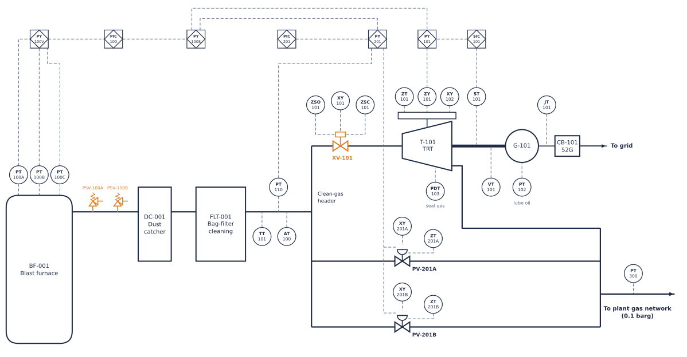
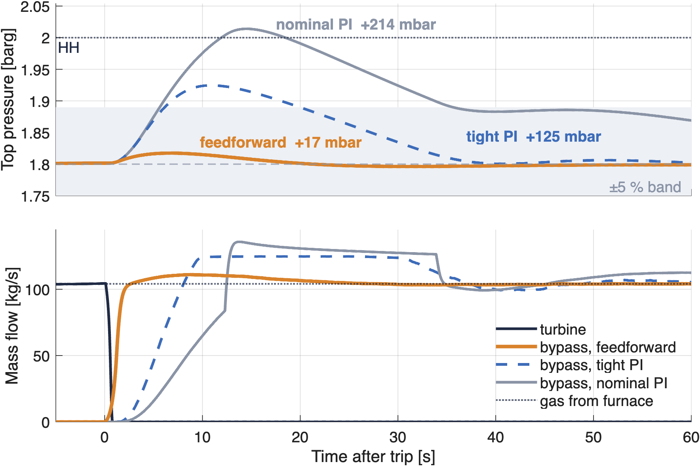

Portfolio project · process control
A turbine recovers ≈ $p_el MW from blast-furnace gas, yet must be invisible to the furnace. I designed and simulated the control system that keeps top pressure within $ff_peak mbar when the turbine trips at full load.
The problem
Top gas ($q_n Nm³/h, $sp barg) is expanded in the turbine T-101 to recover $p_el MW; bypass valves PV-201A/B in parallel take the gas when it cannot. Top pressure belongs to the furnace and must stay at set point. The hard case is a trip: XV-101 closes in 0.7 s and 104 kg/s must move to the bypass, or pressure climbs ≈ 30 mbar/s toward the 2.2 barg bleeders. Target ≤ 90 mbar.

Simplified P&ID (ISA-5.1), vector: zoom in the PDF. Generated from the single tag list
that also produces the I/O list and the cause & effect matrix; legend and notes in docs/pid/.
Control strategy
The vanes act first, so all the gas goes through the turbine. The bypass opens only when the vanes saturate. Bypass requests are in flow, so the loop gain is the same on both sides.
Back-calculation on the position actually reached; external reset during the high-high override. Every mode change re-initialises the PI.
On the trip signal the bypass goes straight to the position that passes the turbine flow just before the trip. The bypass is choked, so a rising pressure adds relief by itself.
SIMC rules on the linearised two-volume plant (84 s and 2.6 s time constants): Kp = $kp %/bar, Ti = $ti s. Gain scheduling for bypass-only operation.
Key result

To reach 90 mbar, feedback alone needs a phase margin of only 20°, and it is still 5× worse. The gas disappears in 0.7 s; the loop sees it only after 2–3.6 s of effective dead time. Robust to actuator speed (7–27 mbar for ESD 0.5–1 s, bypass 1–2 s) and to a ±20 % feedforward error (≈ 50 mbar).
Scope and honesty